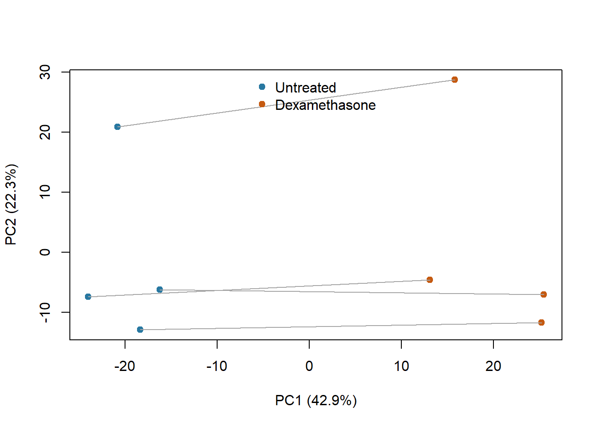
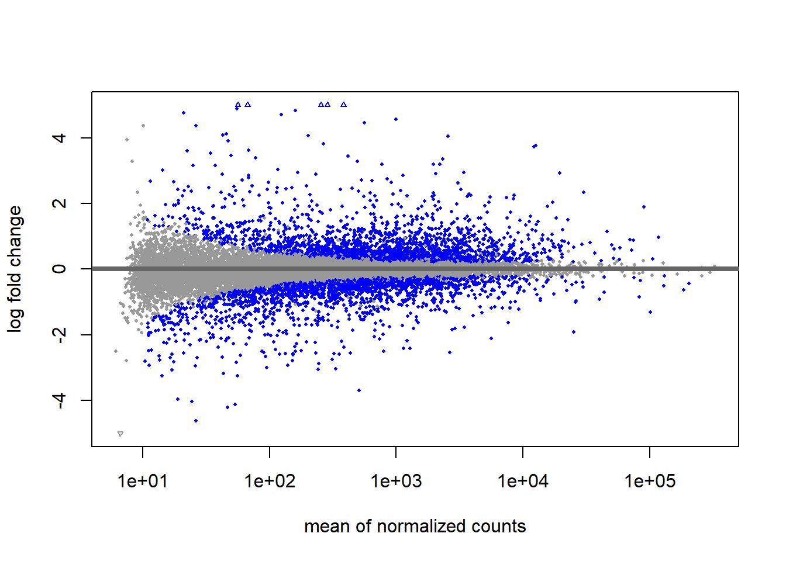
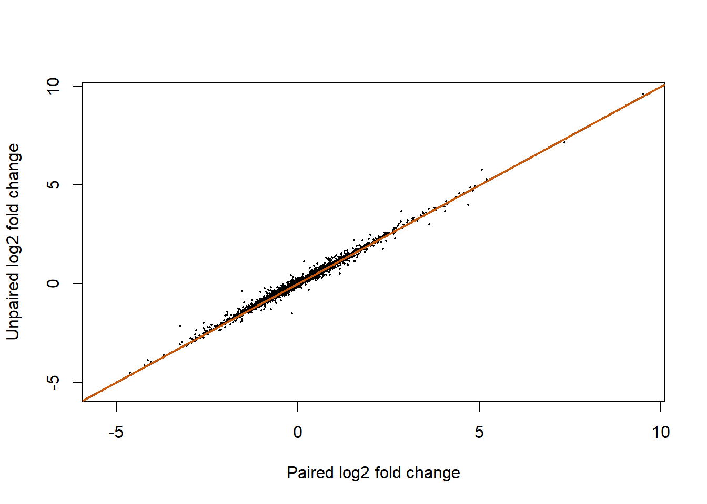

Show R code
helper_dir <- if (dir.exists("R")) "R" else "../R"
source(file.path(helper_dir, "case_helpers.R"))Case 1: Real counts, paired design and DESeq2
Does dexamethasone alter gene expression in cultured human airway smooth-muscle cells, accounting for differences between cell lines? This case uses actual processed RNA-seq counts, moving from the transparent hypothetical model in P09 to a negative-binomial analysis with DESeq2.
By the end, you should be able to audit a paired design, distinguish library totals from size factors, specify a treatment contrast, interpret effect sizes and false-discovery-rate adjustment, and examine what changes when pairing is omitted. Allow 3–4 hours, after B02/B06/B12 and P09.
The Himes et al. study profiled primary airway smooth-muscle cell lines. The airway package provides the eight untreated/dexamethasone libraries from four cell lines. Each line contributes one sample in each condition. The experiment concerns cultured cells; these eight libraries are not eight independently sampled patients.
The local extract contains the complete package count matrix and sample identifiers, from airway 1.26.0. No biological download is needed to run this lesson. Counts depend on the package’s gene models and read-counting procedure. Starting from a processed matrix lets us examine statistical analysis, but does not recheck FASTQ quality, mapping or strandedness. Provenance and reuse terms are in data notes.
The working model is:
\[K_{gj}\sim\mathrm{NB}(\mu_{gj},\alpha_g),\qquad \log\mu_{gj}=\log s_j+\beta_{g0}+\beta_{g,\mathrm{cell}(j)}+ \beta_{g,\mathrm{dex}}I(j\text{ treated}).\]
Here \(s_j\) is a sample size factor and \(\alpha_g\) is gene-specific dispersion. The treatment coefficient represents the within-line comparison under the additive design. There is only one library per line–condition combination, so a saturated line-by-treatment interaction is not estimable with replicated residual error.
This real case requires DESeq2, unlike the base-R P01–P31 practicals. Install it using the Bioconductor release appropriate to your R version:
The worked analysis was checked with R 4.4.1 and DESeq2 1.46.0 (Bioconductor 3.20). Later compatible versions may give slightly different numerical results. Installation is a separate student setup step; rendering does not install packages or retrieve data.
if (!suppressWarnings(requireNamespace("DESeq2", quietly = TRUE)))
stop("Install DESeq2 with BiocManager before running Case 1.")
suppressWarnings(suppressPackageStartupMessages(library(DESeq2)))
counts <- case_matrix(case_read("airway_counts.csv.gz"))
meta <- case_read("airway_samples.csv")
stopifnot(!anyDuplicated(meta$sample_id), setequal(colnames(counts), meta$sample_id))
meta <- meta[match(colnames(counts), meta$sample_id), ]
rownames(meta) <- meta$sample_id
meta$cell <- factor(meta$cell)
meta$dex <- factor(meta$dex, levels = c("untrt", "trt"))
stopifnot(identical(colnames(counts), rownames(meta)),
all(table(meta$cell, meta$dex) == 1),
all(counts >= 0), all(counts == round(counts)))
knitr::kable(meta, row.names = FALSE)| sample_id | cell | dex |
|---|---|---|
| SRR1039508 | N61311 | untrt |
| SRR1039509 | N61311 | trt |
| SRR1039512 | N052611 | untrt |
| SRR1039513 | N052611 | trt |
| SRR1039516 | N080611 | untrt |
| SRR1039517 | N080611 | trt |
| SRR1039520 | N061011 | untrt |
| SRR1039521 | N061011 | trt |
[1] 63677 8Before fitting: identify the four pairs. Explain why arranging a table in a visually convenient order is not enough to guarantee that metadata match count columns. The identity check must compare explicit sample identifiers.
We retain genes with at least 10 counts in at least four libraries. This is a stated teaching prefilter, applied without examining treatment effects. It removes extremely sparse features to improve computation and interpretability; it is not a universal threshold for RNA-seq studies.
keep <- rowSums(counts >= 10) >= 4
dds <- DESeqDataSetFromMatrix(countData = counts[keep, ],
colData = meta, design = ~ cell + dex)
stopifnot(qr(model.matrix(~ cell + dex, meta))$rank == 5)
dds <- DESeq(dds, quiet = TRUE)
res <- results(dds, contrast = c("dex", "trt", "untrt"), alpha = 0.05)
data.frame(input_genes = nrow(counts), retained_genes = sum(keep),
tested_pvalues = sum(!is.na(res$pvalue)),
adjusted_pvalues = sum(!is.na(res$padj)),
padj_below_005 = sum(res$padj < 0.05, na.rm = TRUE)) input_genes retained_genes tested_pvalues adjusted_pvalues padj_below_005
1 63677 16139 16139 15826 4081The contrast is treated minus untreated on the log2 scale. A positive log2 fold change corresponds to higher expected normalized abundance in treated cells under this model. DESeq2 estimates dispersions across genes and applies multiple-testing adjustment, including its default independent filtering at the supplied alpha. Some adjusted p-values can therefore be missing even when a raw p-value exists. An outlier rule can also affect a gene’s test. Inspect these cases rather than changing missing values to 1 or 0.
sample cell dex raw_total size_factor
SRR1039508 SRR1039508 N61311 untrt 20637971 1.0219766
SRR1039509 SRR1039509 N61311 trt 18809481 0.8960716
SRR1039512 SRR1039512 N052611 untrt 25348649 1.1739790
SRR1039513 SRR1039513 N052611 trt 15163415 0.6683683
SRR1039516 SRR1039516 N080611 untrt 24448408 1.1753681
SRR1039517 SRR1039517 N080611 trt 30818215 1.3992613
SRR1039520 SRR1039520 N061011 untrt 19126151 0.9165167
SRR1039521 SRR1039521 N061011 trt 21164133 0.9450647v <- vst(dds, blind = FALSE)
pc <- prcomp(t(assay(v)), center = TRUE, scale. = FALSE)
explained <- 100 * pc$sdev^2 / sum(pc$sdev^2)
cols <- c(untrt = "#2878a1", trt = "#c55a11")
plot(pc$x[, 1:2], col = cols[as.character(meta$dex)], pch = 19,
xlab = sprintf("PC1 (%.1f%%)", explained[1]),
ylab = sprintf("PC2 (%.1f%%)", explained[2]))
for (lev in levels(meta$cell)) {
ix <- which(meta$cell == lev)
lines(pc$x[ix, 1], pc$x[ix, 2], col = "grey65")
}
legend("top", legend = c("Untreated", "Dexamethasone"),
col = cols, pch = 19, bty = "n")
Lines connect the samples from each cell line. PCA summarizes variation after a variance-stabilizing transformation; it does not test the treatment contrast. blind = FALSE uses the fitted design to estimate the transformation and is not equivalent to removing cell-line or treatment effects. The PCA still contains both. Size factors need not be proportional to total reads because composition matters; see the composition figure.
| gene_id | baseMean | log2FoldChange | lfcSE | padj |
|---|---|---|---|---|
| ENSG00000152583 | 997.961 | 4.571 | 0.184 | 0 |
| ENSG00000165995 | 495.567 | 3.287 | 0.132 | 0 |
| ENSG00000120129 | 3411.966 | 2.944 | 0.122 | 0 |
| ENSG00000101347 | 12712.946 | 3.763 | 0.156 | 0 |
| ENSG00000189221 | 2343.573 | 3.350 | 0.142 | 0 |
| ENSG00000211445 | 12298.197 | 3.726 | 0.167 | 0 |
| ENSG00000157214 | 3012.858 | 1.973 | 0.091 | 0 |
| ENSG00000162614 | 5399.136 | 2.032 | 0.096 | 0 |
| ENSG00000125148 | 3659.696 | 2.207 | 0.107 | 0 |
| ENSG00000154734 | 30345.849 | 2.342 | 0.118 | 0 |
Airway MA plot: average normalized abundance versus the unshrunken treated-minus-untreated log2 effect. Highlighting uses adjusted p-values below 0.05.

The MA plot relates average normalized abundance to the estimated treatment effect. The displayed fold changes are unshrunken model estimates; for unstable low-count genes, a compatible shrinkage method can be an advanced extension. A large effect with a large standard error is different evidence from a precise moderate effect. FDR adjustment concerns a testing procedure across genes, not the probability that an individual biological mechanism is correct.
Choose a gene before inspecting its result for your report, using a documented identifier and annotation version. If you instead choose the first row above, label it an exploratory selected gene. Plot its normalized counts by condition with the four pairs connected. Neither strategy establishes treatment efficacy in patients.
This is a comparison with an analysis that discards known design information, not a replacement primary model. Keep the same genes and normalization approach, then assess effects and uncertainty separately.
unpaired <- DESeqDataSetFromMatrix(countData = counts[keep, ], colData = meta, design = ~ dex)
unpaired <- DESeq(unpaired, quiet = TRUE)
ru <- results(unpaired, contrast = c("dex", "trt", "untrt"), alpha = 0.05)
comparison <- data.frame(gene = rownames(res), paired_effect = res$log2FoldChange,
unpaired_effect = ru$log2FoldChange,
paired_se = res$lfcSE, unpaired_se = ru$lfcSE)
summary(comparison$unpaired_se / comparison$paired_se) Min. 1st Qu. Median Mean 3rd Qu. Max.
0.5775 0.9449 1.1012 1.2887 1.3885 16.7605 
Omitting pairing changes the fitted model and the treatment uncertainty. In a balanced design, effect estimates may agree more closely than standard errors. A larger discovery count alone does not validate a model: the primary design was chosen from how samples were collected, before seeing p-values.
Each line supplies its own baseline, so the contrast compares conditions within lines. More independently prepared observations within line–condition combinations would support an interaction assessment, though generalization across donors still requires adequate donors. Independent filtering may omit low-information genes from adjustment; outlier-related missing tests require separate diagnosis. A less strict prefilter changes the eligible features and may alter adjustment as well as computation. Prespecification and exploratory selection have different interpretation, even if the same gene is eventually discussed.
Submit the design, prefilter, contrast, normalization diagnostic, effect/uncertainty table and one sensitivity analysis using the Case 1 assignment. Include the input manifest, annotation limitations and package versions.
For method details, consult the DESeq2 vignette. Continue to Case 2 to compare count evidence with protein-enrichment intensities.